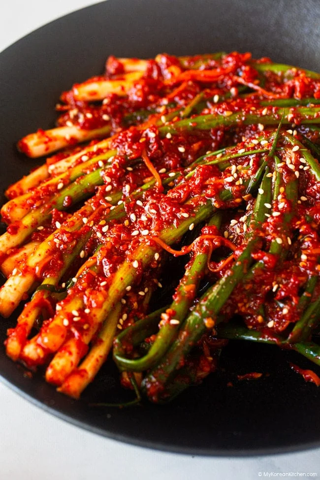

Pa Kimchi

Description
Pa kimchi is a Korean kimchi made with green onions (also called scallions). Unlike napa cabbage kimchi, it lets the flavor of the green onions shine through, while coating them in a bold, spicy seasoning made with gochugaru (Korean chili flakes), fish sauce, and other flavorful ingredients. Depending on how long it is fermented, pa kimchi can
taste fresh and vibrant or deeper, tangier, and more savory.
Main
Ingredients
- 530 g / 1.2 lb green onions (scallions), trimmed, rinsed and drained well (This was about 600 g / 1.3 g lb before trimming.)
- 75 g (2.6 oz) carrot, julienned
- 2 Tbsp toasted sesame seeds
Kimchi ingredients
- 1/3 cup Korean anchovy fish sauce, divided
- 2 dried Korean red chillies, (optional)
- 45 g (1.6 oz), garlic cloves, peeled, about 12 cloves
- 175 g (6.2 oz), sweet apple or Korean pear, cored and roughly chopped
- 80 g (2.8 oz), onion, roughly chopped
- 1/2 cup granulated sugar
- 1 cup gochugaru (Korean chili flakes)
- 1 Tbsp Korean plum extract or 2 Tbsp Korean corn syrup
- 1 Tbsp minced ginger
- 4 Tbsp coarse sea salt, adjust to taste
Flour paste
- 1 Tbsp all-purpose flour
- 1 cup water
Steps
- Blend the fruit and vegetable mixture
- Prepare the seasoning mixture
- Make the flour paste
- Combine the kimchi seasoning
- Coat the green onions
- Store and ferment
- Eat and enjoy!
Home